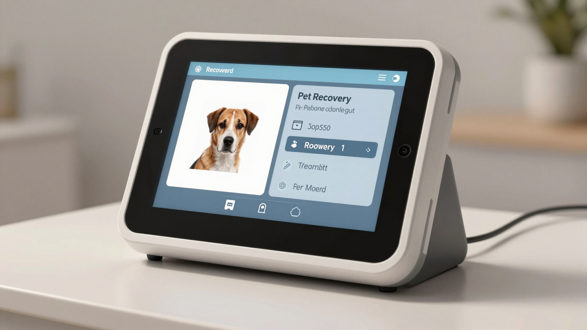

Basic Tier
Essential tools to keep your pet connected to you through their microchip. The Basic Tier gives you everything you need to register your pet's microchip and stay reachable if they ever go missing. It’s a simple, affordable way to connect your pet to the Trackyn network and support fast reunions.
1. Registration
Create a secure profile for your pet by linking their microchip number to your contact details. This is the foundation of your pet’s digital identity in Trackyn.
- Add your pet’s microchip ID, name, and key details
- Link your phone number and email for urgent contact
- Update information anytime as your pet’s life changes
2. Search Registry
Use the registry search to confirm that your pet’s microchip is active and correctly linked to your profile. Vets and shelters can also use this to reach you if your pet is found.
- Check that your pet’s microchip is registered
- Verify that your contact details are up to date
- Help clinics and rescuers confirm your pet’s identity
3. Report Lost Pet
If your pet goes missing, you can mark them as lost in the registry so that anyone who scans their microchip knows to contact you immediately.
- Flag your pet as lost in the Trackyn system
- Share key details that help identify your pet
- Make it easier for vets and shelters to reach you quickly

4. Update Pet/Owner Details
Keep your pet’s profile accurate as your life changes—new phone number, new address, or new medical notes. Updated details mean a higher chance of a safe reunion.
- Edit your contact information anytime
- Update your pet’s description or medical notes
- Ensure scanners always see the latest, correct details